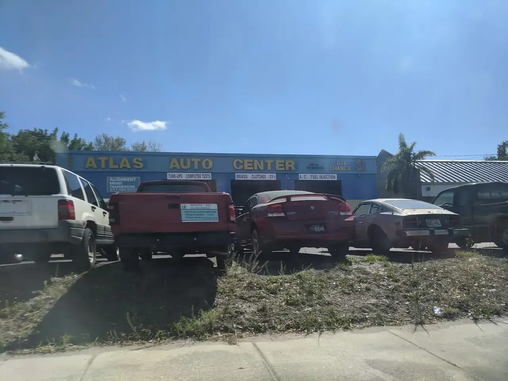
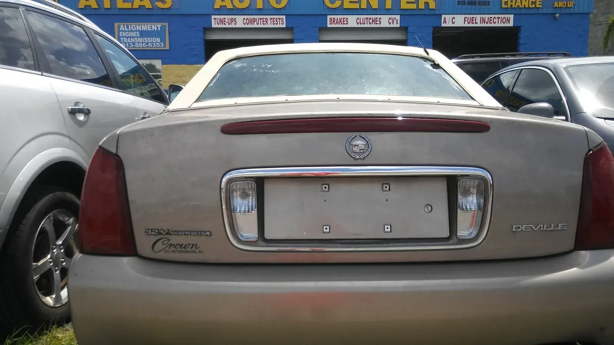
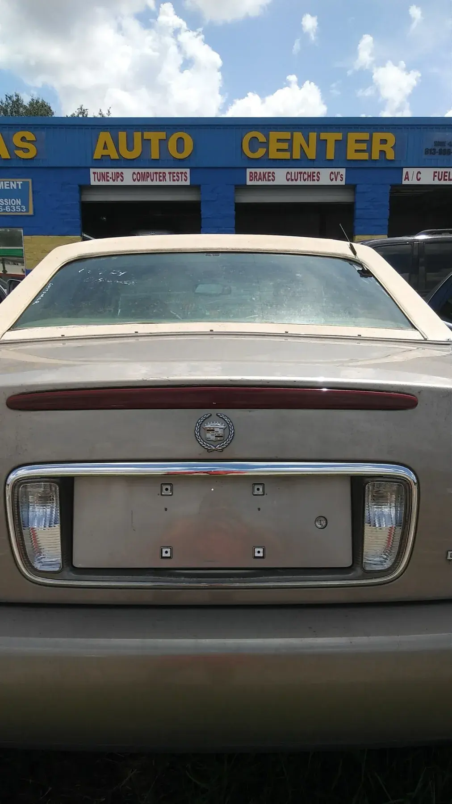
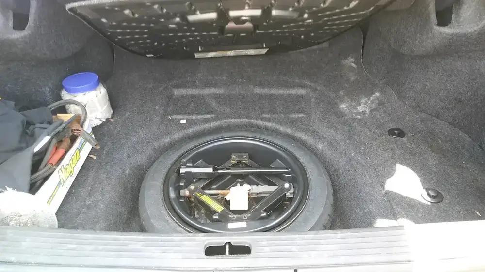
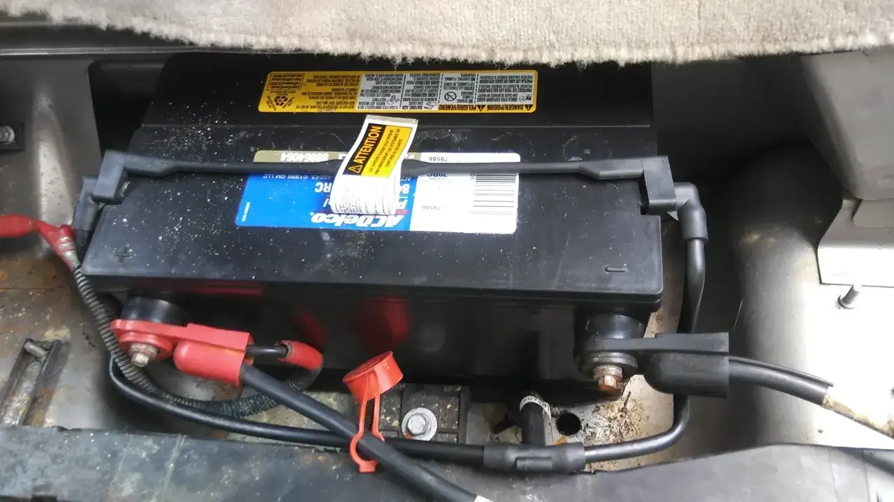
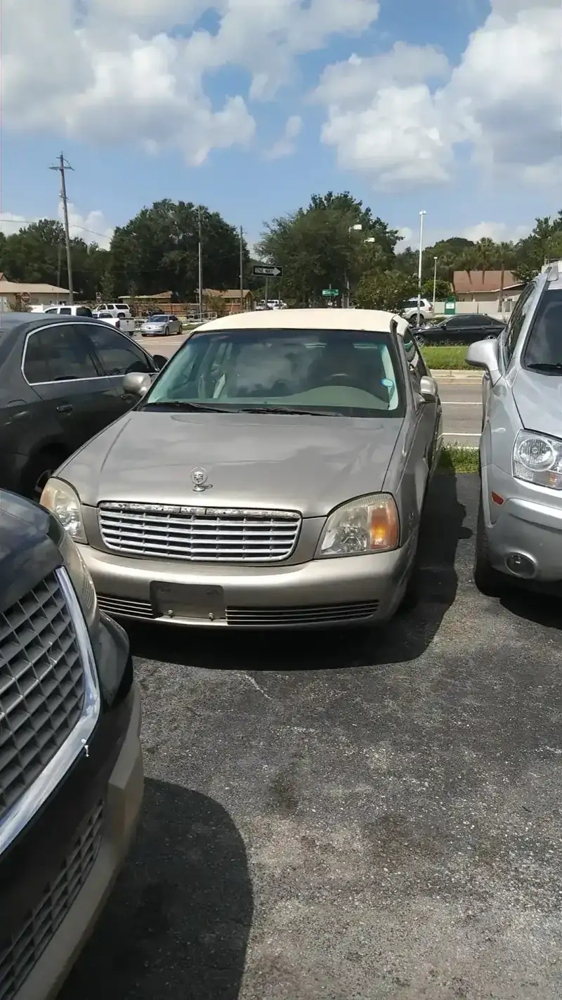
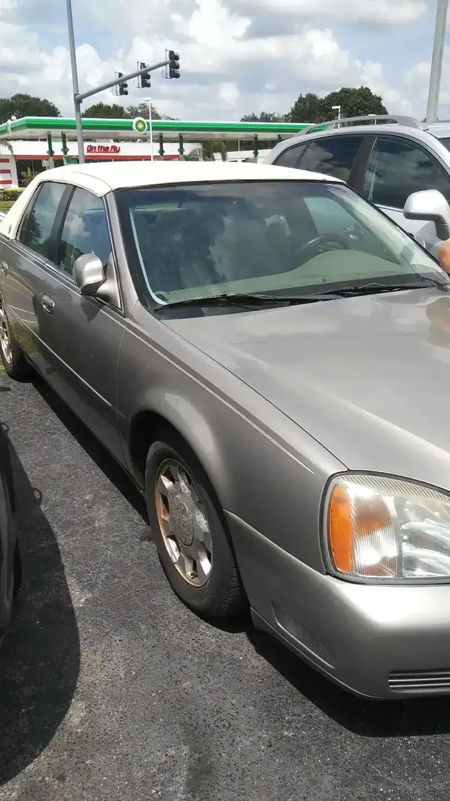

Auto repair · Sheldon Rd, Tampa
Honest repair, explained first.
Ali walks you through what is wrong and why, then fixes it at a fair price.
Atlas Auto Center

JOB ESTIMATE
- Diagnostics✓
- Transmission✓
- Brakes✓
- A/C✓
- Suspension✓
- Oil change✓
TOTALWE CALL FIRST
** Serving Tampa over 20 years **
4.8/5 · 224 Google REVIEWS
THANK YOU. COME AGAIN.
Itemised
What we fix
Engine to brakes, A/C to transmissions, on all makes and models.
Atlas
SERVICES
- 1
Engine and diagnostics
✓Engine repair and computer diagnostics to find out why the car is acting up.
- Engine repair
- Computer diagnostic
- 2
Transmission
✓Diagnostics, service, repair and replacement for automatic and manual transmissions.
- Shifting and slipping
- Leaks and noises
- 3
Brakes
✓Brake service and repair, explained before the work starts.
- Brake service
- Brake repair
- 4
A/C and cooling
✓A/C repair and service, plus the cooling system.
- A/C repair
- Cooling system
- 5
Suspension and steering
✓Rebuilds and repairs, from everyday cars to a 150k mile F150 4x4.
- Suspension
- Steering
- 6
Tune-ups and oil
✓Routine maintenance to keep the car on the road.
- Tune-ups
- Oil change
TOTALWE CALL FIRST
Customer copies
What drivers say
4.8 / 5 from 224 Google reviews
CUSTOMER COPY
Reza and Ali and their team all share high skills and honestly do work at higher level than required. A small job first went well so I just gave them a big job: 150k mile F150 4x4 suspension and steering rebuild. They did a fantastic job, at a fair price and on time. My big beater drives like new now. And I didn't spend all weekend (or worse) doing it!
SIGNED: bill H.
CUSTOMER COPY
This place is great! Honest, professional and courteous! Ali patiently explained everything, the how and why the issues were happening and what was needed to fix it. The dealership quoted us thousands more for same repair that cost less than a thousand here.
SIGNED: C G.
CUSTOMER COPY
I will recommend this Auto Center for anyone in the Tampa Bay Area. Ali is amazing. He has fixed complicated problems in my car twice now, and my friends car once. This is a reliable mechanic that charges fairly and will not do anything shady. 10/10
SIGNED: Zman09

The shop
Over 20 years on Sheldon Road
Atlas Auto Center has served Tampa for over 20 years, repairing domestic, Asian and European cars from the blue shop at 6905 Sheldon Rd. Ask for Ali or Reza.
Reviewers keep saying the same thing: Ali explains how and why a problem happened and what it takes to fix it. One driver got a repair for under a thousand dollars that a dealership had quoted thousands more for. Another handed over a 150k mile F150 suspension and steering rebuild after a small job went well, and it came back on time.
OUR POLICY
- Explained first. Ali patiently walks drivers through the how and why before the work starts.
- Fair price. Reviewers say it costs less than the dealership quoted for the same repair.
- Hard jobs welcome. A VW wiper problem and a full F150 suspension rebuild have both come through the bay.
Attached prints
Around the shop












Find us
Find us on Sheldon Rd
6905 Sheldon Rd, Tampa, FL 33615
Closed Sundays. Call the shop before you head over.
Hours
- Mon
- 8 AM–5 PM
- Tue
- 8 AM–5 PM
- Wed
- 8 AM–5 PM
- Thu
- 8 AM–5 PM
- Fri
- 8 AM–5 PM
- Sat
- 8 AM–12 PM
- Sun
- Closed